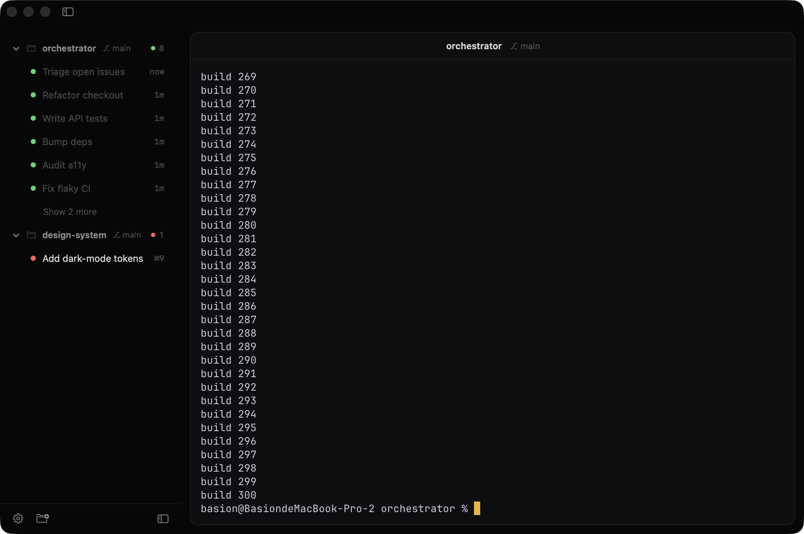

Run five agents at once without losing the thread. Sessions live outside the window, so quitting never kills them — and the sidebar reads like a dashboard. Native Swift, powered by libghostty.
Free · no account · no telemetry · ~8 MB · macOS 13 (Ventura) or later

Not a chat wrapper. A real terminal with a dashboard wrapped around it.
Every session runs in a background daemon, not the window. Quit it, crash it, relaunch it — your agents keep working. The daemon even remembers sessions on disk, so a reboot brings them back.
One colored dot tells you the state of every agent — no reading logs to know what's happening.
Watch up to four sessions side by side in one window (⌘D). Each pane is a full terminal with its own focus ring; the grid reflows as you resize.
Add a project folder once and it stays pinned — with its git branch and a roll-up of how many agents are running inside. The sidebar is a project manager, not a flat list.
Built-in git worktrees let multiple agents work the same project on separate branches without stepping on each other — grouped under the project.
Launch Claude, Codex, Gemini and friends with the right command in one click. Hover a project, hit ＋, pick a harness.
A macOS notification and a Dock badge the moment an agent needs your answer or finishes. It taps you; you don't babysit it.
Press ⌘K to fuzzy-jump to any session, project, or action, Spotlight-style.
Switch themes live from Settings with instant preview — no restart. Plus font, line-height, cursor and opacity. The window chrome stays seamless.
Helios ships a local Model Context Protocol server for session control. It gives any session a safe way to inspect and drive its siblings: read output, type a prompt, answer menus, even start and close whole sessions.
That's how one orchestrator can run a fleet of agents while you stay out of the keystroke-by-keystroke loop — scoped to your project by default, and you can turn it off entirely.

Every session runs in its own hosted process, so it survives quitting the window. A menu-bar item keeps a live pulse on all of them — grouped by project, one click away. Pick one and Helios snaps the window back open, right to that session.

500+ built-in themes, switchable live with instant preview. Dial in the font, size, line-height, cursor style and window opacity — and the whole window chrome follows your theme so nothing looks bolted on.

The future of AI-assisted work isn't one model or one harness. It's many, working together.
Claude for deep reasoning. Codex for code. Fast local models for the cheap, private work. And whatever lands next. Each is brilliant at something different, and betting everything on one is a bet you'll lose.
Helios is the calm place that sits between them. Run every agent side by side, let Sessions MCP wire them together, and stop juggling windows and copy-pasting between tools. One terminal where every harness is a teammate — and they can actually talk to each other.
No account. No telemetry. No cloud. Just a fast native app.
Download Helios for MacFirst launch: right-click Helios → Open → Open (ad-hoc signed, not notarized).
Claude Code, Codex, Gemini, Amp, OpenCode, Cursor — and really any CLI. Each comes with one-tap presets and the right flags. Bring your own keys or logins; Helios just gives each tool a native home and orchestrates them.
Yes. Real Swift and AppKit, with a libghostty terminal rendered on the GPU. No web view, no Chromium, so it stays fast and light on your battery and RAM.
Yes. Helios uses a hosted PTY model: the live terminal runs in a separate session host (the heliosd daemon) that owns the real terminal, while the app window is just an attachable client. Close or restart the app and Helios reconnects to the running host and replays the saved output. The daemon also persists its sessions to disk, so they come back even after a reboot. People compare this to tmux because the idea is similar — but Helios implements the host, socket, output log and app integration itself; no tmux required.
A local Model Context Protocol server bundled with Helios that lets one session safely inspect and drive its siblings — read output, send a prompt, answer menus, start or close sessions. It's how a single orchestrator agent can run a whole fleet. It's scoped to your current project by default and can be turned off entirely.
Because the terminal is where these agents actually live. Every provider ships their best work as a CLI and improves it constantly. The moment you wrap a custom chat UI on top, you're building a lowest-common-denominator layer that's always a step behind and hides features. Helios gives each CLI a first-class native home instead — the terminal in full when you want it, out of your way when you don't — plus the dashboard, auto-titling and one-tap launching around it.
No — Helios is free. It will never add cloud services, accounts or telemetry. You bring your own agent keys and run everything locally on your Mac.
The app is ad-hoc signed but not notarized, so Gatekeeper asks once. Right-click Helios → Open → Open the first time, and it launches normally after that.